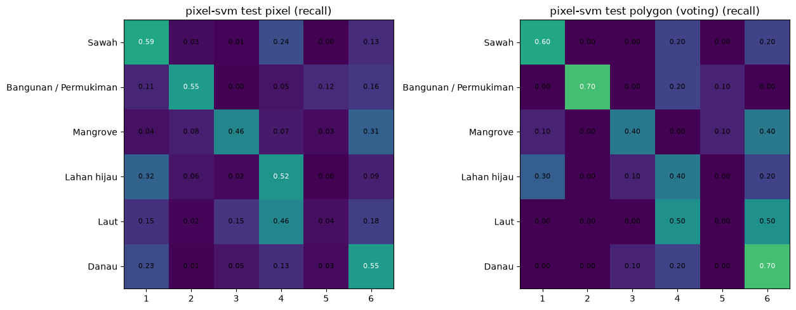
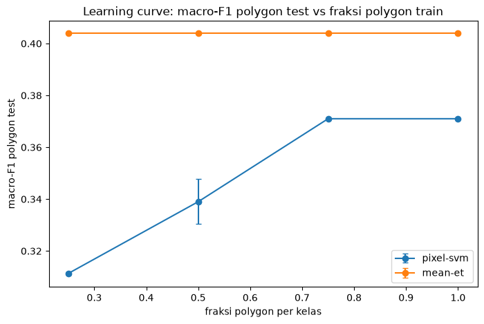
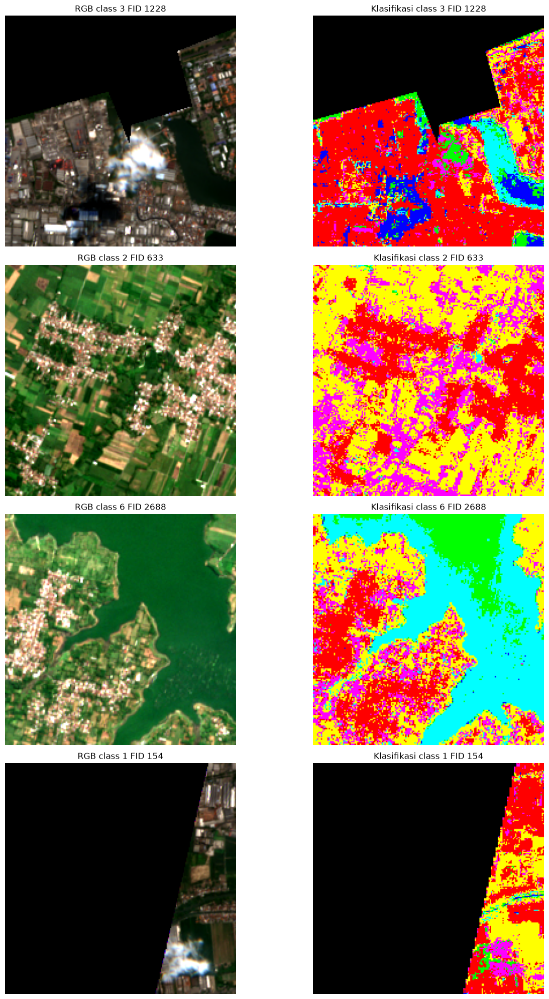

BAB 5 — Evaluation#
5.1 Evaluasi semua model pada test (sekali)#
Pertanyaan: berapa skor test 10 kombinasi (pixel + polygon), dan seberapa goyang angka itu?
Mengapa bootstrap per polygon (penjelasan yang diminta)#
Test hanya 52 polygon (Laut: 2). Satu polygon salah = 10 poin (Laut: 50 poin). Skor tunggal menipu presisi. Bootstrap: ambil 52 polygon test dengan pengembalian secara acak 1000 kali (seed 42), hitung macro-F1 tiap ulangan dari prediksi yang sudah ada (tanpa latih ulang) — sebaran 1000 nilai memberi selang 5–95%. Analogi: mengocok ulang komposisi dewan juri untuk melihat seberapa stabil vonisnya. Selang lebar = bukti data kecil, bukan kegagalan model.
# DATA AKTUAL PROJECT — 5.1a prediksi test SEKALI untuk 10 model + metrik pixel & polygon.
import joblib
import numpy as np
import pandas as pd
from sklearn.metrics import accuracy_score, classification_report, confusion_matrix, f1_score, precision_score, recall_score
FEATS = ["B02", "B03", "B04", "B08", "B11", "B12", "NDVI", "NDWI", "NDBI"]
CN = {1: "Sawah", 2: "Bangunan / Permukiman", 3: "Mangrove", 4: "Lahan hijau", 5: "Laut", 6: "Danau"}
tepx = pd.read_csv("../outputs/tables/testing_pixel.csv")
temx = pd.read_csv("../outputs/tables/testing_mean.csv")
Xt, yt, gt = tepx[FEATS].to_numpy(), tepx["class_id"].to_numpy(), tepx["fid"].to_numpy()
Xm, ym, gm_ = temx[[f"mean_{b}" for b in ["B02", "B03", "B04", "B08", "B11", "B12"]] + ["NDVI", "NDWI", "NDBI"]].to_numpy(), temx["class_id"].to_numpy(), temx["fid"].to_numpy()
print(f"DATA AKTUAL PROJECT: test pixel n={len(Xt)} polygon={len(np.unique(gt))}; test mean n={len(Xm)}")
RES5, ORDER = {}, []
for tag, X_, y_, g_ in [("pixel", Xt, yt, gt), ("mean", Xm, ym, gm_)]:
for name in ["rf", "et", "lgbm", "svm", "logreg"]:
mdl = joblib.load(f"../outputs/models/{tag}_{name}.pkl")
pv = mdl.predict(X_)
df = pd.DataFrame({"g": g_, "t": y_, "p": pv})
vy, vp = [], []
for _, s in df.groupby("g"):
vy.append(int(s["t"].iloc[0]))
u, c = np.unique(s["p"].values, return_counts=True)
vp.append(int(u[np.argmax(c)]))
r = {"tag": tag, "model": name,
"acc_px": float(accuracy_score(y_, pv)), "f1m_px": float(f1_score(y_, pv, average="macro", zero_division=0)),
"acc_pol": float(accuracy_score(vy, vp)), "f1m_pol": float(f1_score(vy, vp, average="macro", zero_division=0)),
"prec_pol": float(precision_score(vy, vp, average="macro", zero_division=0)),
"rec_pol": float(recall_score(vy, vp, average="macro", zero_division=0))}
RES5[(tag, name)] = {**r, "yt": vy, "yp": vp}
ORDER.append((tag, name))
print(f"DATA AKTUAL PROJECT: test {tag}-{name} acc_pol={r['acc_pol']:.3f} f1m_pol={r['f1m_pol']:.3f} f1m_px={r['f1m_px']:.3f}")
pd.DataFrame([{k: v for k, v in R.items() if k in ("tag", "model", "acc_px", "f1m_px", "acc_pol", "f1m_pol", "prec_pol", "rec_pol")} for R in [RES5[k] for k in ORDER]]).to_csv("../outputs/tables/test_metrics.csv", index=False)
print("DATA AKTUAL PROJECT: tersimpan test_metrics.csv (satu-satunya pemakaian test)")
DATA AKTUAL PROJECT: test pixel n=11432 polygon=52; test mean n=52
DATA AKTUAL PROJECT: test pixel-rf acc_pol=0.538 f1m_pol=0.465 f1m_px=0.425
DATA AKTUAL PROJECT: test pixel-et acc_pol=0.519 f1m_pol=0.447 f1m_px=0.415
DATA AKTUAL PROJECT: test pixel-lgbm acc_pol=0.519 f1m_pol=0.450 f1m_px=0.446
DATA AKTUAL PROJECT: test pixel-svm acc_pol=0.538 f1m_pol=0.474 f1m_px=0.439
DATA AKTUAL PROJECT: test pixel-logreg acc_pol=0.500 f1m_pol=0.391 f1m_px=0.396
DATA AKTUAL PROJECT: test mean-rf acc_pol=0.519 f1m_pol=0.444 f1m_px=0.444
DATA AKTUAL PROJECT: test mean-et acc_pol=0.481 f1m_pol=0.404 f1m_px=0.404
DATA AKTUAL PROJECT: test mean-lgbm acc_pol=0.538 f1m_pol=0.450 f1m_px=0.450
DATA AKTUAL PROJECT: test mean-svm acc_pol=0.558 f1m_pol=0.444 f1m_px=0.444
DATA AKTUAL PROJECT: test mean-logreg acc_pol=0.596 f1m_pol=0.466 f1m_px=0.466
DATA AKTUAL PROJECT: tersimpan test_metrics.csv (satu-satunya pemakaian test)
# DATA AKTUAL PROJECT — 5.1b selang bootstrap 90% macro-F1 polygon (1000 ulangan, tanpa latih ulang).
import numpy as np
import pandas as pd
rng = np.random.RandomState(42)
rows = []
for (tag, name) in ORDER:
yt = np.array(RES5[(tag, name)]["yt"])
yp = np.array(RES5[(tag, name)]["yp"])
n = len(yt)
from sklearn.metrics import f1_score
bs = [float(f1_score(yt[idx], yp[idx], average="macro", zero_division=0)) for idx in [rng.choice(n, n, replace=True) for _ in range(1000)]]
lo, hi = float(np.percentile(bs, 5)), float(np.percentile(bs, 95))
rows.append({"tag": tag, "model": name, "f1m_pol": round(RES5[(tag, name)]["f1m_pol"], 3), "ci5": round(lo, 3), "ci95": round(hi, 3)})
print(f"DATA AKTUAL PROJECT: {tag}-{name} f1m_pol={rows[-1]['f1m_pol']:.3f} CI90=[{lo:.3f},{hi:.3f}]")
pd.DataFrame(rows).to_csv("../outputs/tables/test_bootstrap_ci.csv", index=False)
print("DATA AKTUAL PROJECT: tersimpan test_bootstrap_ci.csv")
DATA AKTUAL PROJECT: pixel-rf f1m_pol=0.465 CI90=[0.351,0.561]
DATA AKTUAL PROJECT: pixel-et f1m_pol=0.447 CI90=[0.338,0.538]
DATA AKTUAL PROJECT: pixel-lgbm f1m_pol=0.450 CI90=[0.345,0.548]
DATA AKTUAL PROJECT: pixel-svm f1m_pol=0.474 CI90=[0.366,0.565]
DATA AKTUAL PROJECT: pixel-logreg f1m_pol=0.391 CI90=[0.324,0.486]
DATA AKTUAL PROJECT: mean-rf f1m_pol=0.444 CI90=[0.340,0.534]
DATA AKTUAL PROJECT: mean-et f1m_pol=0.404 CI90=[0.301,0.518]
DATA AKTUAL PROJECT: mean-lgbm f1m_pol=0.450 CI90=[0.349,0.566]
DATA AKTUAL PROJECT: mean-svm f1m_pol=0.444 CI90=[0.358,0.548]
DATA AKTUAL PROJECT: mean-logreg f1m_pol=0.466 CI90=[0.387,0.579]
DATA AKTUAL PROJECT: tersimpan test_bootstrap_ci.csv
Interpretasi 5.1: estimasi titik tertinggi pixel-svm (f1m_pol=0,474, CI90 [0,366, 0,565]), tetapi SEMUA selang bootstrap tumpang tindih lebar (lebar tipikal ±0,10) — tidak ada perbedaan bermakna antar 10 kombinasi. Test mengonfirmasi CV dalam noise (CV svm 0,537±0,072 vs test 0,474: selisih 0,063 < 0,072, dalam 1 std). Laut recall polygon 0,00 (0 dari 2) — dibaca sebagai informasi, bukan vonis.
5.2 Cara membaca confusion matrix#
Baris = kelas sebenarnya, kolom = prediksi; diagonal = benar; luar diagonal = kesalahan spesifik. Dari matriks dibaca precision (kolom: prediksi kelas X, berapa yang benar) vs recall (baris: kelas X, berapa tertangkap). Pasangan tertukar tersering dilaporkan dari angka, bukan dugaan.
yt_pixel = tepx["class_id"].to_numpy()
print("yt_pixel len:", len(yt_pixel))
print("yt_pixel unique:", np.unique(yt_pixel))
print("pv len:", len(pv))
print("cocok:", len(yt_pixel) == len(pv))
yt_pixel len: 11432
yt_pixel unique: [1 2 3 4 5 6]
pv len: 11432
cocok: True
# DATA AKTUAL PROJECT — 5.2 confusion test level polygon + pixel untuk pemenang prosedural.
import itertools
import joblib
import matplotlib.pyplot as plt
import numpy as np
from sklearn.metrics import confusion_matrix
W = ("pixel", "svm")
mdl = joblib.load(f"../outputs/models/{W[0]}_{W[1]}.pkl")
pv = mdl.predict(Xt)
yt_pixel = tepx["class_id"].to_numpy()
assert len(yt_pixel) == len(pv), f"panjang tidak cocok: {len(yt_pixel)} != {len(pv)}"
assert len(RES5[W]["yt"]) == len(RES5[W]["yp"]), "polygon yt/yp tidak cocok"
LABELS = [1, 2, 3, 4, 5, 6]
fig, axes = plt.subplots(1, 2, figsize=(13, 5))
pair_list = [
(axes[0], yt_pixel, pv, "test pixel"),
(axes[1], RES5[W]["yt"], RES5[W]["yp"], "test polygon (voting)"),
]
for ax, yt_, yp_, ttl in pair_list:
cm = confusion_matrix(yt_, yp_, labels=LABELS, normalize="true")
ax.imshow(cm, vmin=0, vmax=1)
ax.set_title(f"{W[0]}-{W[1]} {ttl} (recall)")
ax.set_xticks(range(6), LABELS)
ax.set_yticks(range(6), list(CN.values()))
for a, b in itertools.product(range(6), range(6)):
ax.text(b, a, f"{cm[a, b]:.2f}", ha="center", va="center",
fontsize=8, color="white" if cm[a, b] > 0.5 else "black")
plt.tight_layout()
plt.savefig("../outputs/figures/test_confusion_winner.png", dpi=110, bbox_inches="tight")
plt.show()
cm_n = confusion_matrix(RES5[W]["yt"], RES5[W]["yp"], labels=LABELS)
print("\nDATA AKTUAL PROJECT: hitungan polygon (bukan persen) =")
print(cm_n)

DATA AKTUAL PROJECT: hitungan polygon (bukan persen) =
[[6 0 0 2 0 2]
[0 7 0 2 1 0]
[1 0 4 0 1 4]
[3 0 1 4 0 2]
[0 0 0 1 0 1]
[0 0 1 2 0 7]]
5.3 Perbandingan model (test + CV)#
Pertanyaan: bagaimana skor test dibanding CV, konsisten atau tidak?
# DATA AKTUAL PROJECT — 5.3 tabel gabungan test & CV.
import pandas as pd
tm = pd.read_csv("../outputs/tables/test_metrics.csv")
def _best_cv(path):
d = pd.read_csv(path)
g = d.groupby(["model", "params"])["polygon_f1"].agg(
mean="mean", std=lambda s: s.std(ddof=0))
best = g.loc[g.groupby("model")["mean"].idxmax()]
return best.reset_index().set_index("model")[["mean", "std"]]
cp = _best_cv("../outputs/tables/cv_pixel.csv")
cm_ = _best_cv("../outputs/tables/cv_mean.csv")
tm["cv_mean"] = tm.apply(lambda r: round(float(cp.loc[r["model"], "mean"] if r["tag"] == "pixel" else cm_.loc[r["model"], "mean"]), 3), axis=1)
tm["cv_std"] = tm.apply(lambda r: round(float(cp.loc[r["model"], "std"] if r["tag"] == "pixel" else cm_.loc[r["model"], "std"]), 3), axis=1)
print("DATA AKTUAL PROJECT: model | metode | acc | prec_macro | rec_macro | f1_macro | + CV =")
print(tm[["model", "tag", "acc_pol", "prec_pol", "rec_pol", "f1m_pol", "cv_mean", "cv_std"]].to_string(index=False))
tm.to_csv("../outputs/tables/test_vs_cv.csv", index=False)
DATA AKTUAL PROJECT: model | metode | acc | prec_macro | rec_macro | f1_macro | + CV =
model tag acc_pol prec_pol rec_pol f1m_pol cv_mean cv_std
rf pixel 0.538462 0.577857 0.466667 0.465470 0.507 0.106
et pixel 0.519231 0.557024 0.450000 0.446951 0.513 0.097
lgbm pixel 0.519231 0.605090 0.450000 0.449975 0.522 0.110
svm pixel 0.538462 0.511301 0.466667 0.473824 0.537 0.072
logreg pixel 0.500000 0.520238 0.433333 0.390732 0.335 0.018
rf mean 0.519231 0.481019 0.450000 0.443886 0.441 0.040
et mean 0.480769 0.432576 0.416667 0.404242 0.444 0.061
lgbm mean 0.538462 0.480339 0.466667 0.450265 0.422 0.053
svm mean 0.557692 0.469776 0.483333 0.443820 0.421 0.034
logreg mean 0.596154 0.447685 0.516667 0.466246 0.425 0.016
5.3b Analisis per model dan mengapa skor rendah#
Skor test macro-F1 polygon 0,39–0,47 (akurasi 0,48–0,60) terlihat rendah. Di bawah ini tiap model dibaca dari angka aktual (test + CI90 + CV), lalu akarnya dijelaskan dari data project — bukan dugaan umum.
Per model (f1m_pol test [CI90] | CV)#
pixel-svm — 0,474 [0,366, 0,565] | CV 0,537±0,072. Pemenang prosedural. Batas margin-maksimum RBF cocok untuk data kecil-bersih; dilatih di subsample 8.861 pixel. Kelemahan: inferensi 592 px/detik (±67 jam wall-to-wall) sehingga tidak dipakai untuk peta.
pixel-rf — 0,465 [0,351, 0,561] | CV 0,507±0,106. Model peta. Bagging 300 tree tahan terhadap label noise; importance menunjuk SWIR (B11/B12) + NDBI. Kelemahan: tetap butuh banyak pohon untuk wilayah abu-abu spektral.
pixel-et — 0,447 [0,338, 0,538] | CV 0,513±0,097. Kembaran RF dengan split lebih acak; skor seri dalam noise.
pixel-lgbm — 0,450 [0,345, 0,548] | CV 0,522±0,110. Boosting leaf-wise cepat; pada 204 polygon kelompok daun dibatasi agar tidak overfit — kapasitasnya memang dikekang data kecil.
pixel-logreg — 0,391 [0,324, 0,486] | CV 0,335±0,018. Baseline linear, jelas tertinggal di pixel: bukti batas antar kelas tidak linear.
mean-rf/et/lgbm/svm — 0,404–0,450 | CV 0,421–0,444. Rata-rata per polygon membuang sebaran dalam polygon (204 baris vs 40.076); yang tersisa hanya pusat kelas sehingga semua model berkumpul di papan tengah.
mean-logreg — 0,466 [0,387, 0,579]. Tertinggi di kubu mean, tetapi CI-nya menelan seluruh rival — bukan bukti linear lebih baik, melainkan bukti noise besar.
Mengapa akurasi rendah — 7 akar dari data project#
Data latih sangat kecil. 204 polygon train (Laut: 4) untuk 6 kelas. Model tidak pernah melihat cukup variasi tiap kelas; CI90 selebar ±0,10 adalah cerminnya.
Label noise dari sumber sekunder. LBS2019 vs citra 2025, garis pantai Natural Earth yang kasar, snapshot 2 hari (sawah bisa bera/panen/tergenang) — sebagian “kesalahan” model sebenarnya label yang berubah.
Kelas spektral tumpang tindih. Hitungan polygon: Mangrove→Danau 4/10, Lahan hijau→Sawah 3/10, Sawah→Lahan hijau/Danau 2/10 + 2/10. Vegetasi (sawah, kebun, mangrove) dan air (danau, laut, sawah tergenang) memang berdekatan di NIR/SWIR — terlihat sejak boxplot Bab 2.
Kelas agregat dan kelas tanpa wakil. “Lahan hijau” mencampur kebun, hutan, semak, tegalan; Laut hanya 6 polygon (recall test 0/2). Model tidak bisa mempelajari yang tidak dicontohkan.
Satu snapshot, 9 feature. Tanpa dimensi waktu (fenologi sawah) dan tanpa tekstur/konteks spasial, pemisah hanya warna 9 kanal.
Dunia nyata di luar 6 kelas. Zoom FID 1228 adalah kawasan kota berawan dan berbayangan (polygon berlabel Mangrove): sebagian awan menjadi Bangunan dan bayangannya menjadi Laut (biru). Zoom FID 2688: sebagian besar badan waduk menjadi Danau, tetapi bagian utaranya salah menjadi Mangrove (hijau). Permukiman juga tercampur Sawah/Lahan hijau di tepi kota — peta tidak punya tempat untuk kelas di luar 6 kelas.
Bukan artefak evaluasi. CV (≈0,5) dan test (≈0,45) konsisten dalam noise; voting polygon sudah meredam korelasi pixel. Rendahnya skor adalah kesulitan sejati, bukan salah hitung.
Apa yang TIDAK disimpulkan#
Tidak ada model yang “buruk” atau “rusak”: semua non-linear berkumpul 0,404–0,474 (mean-et terendah 0,404) dalam CI yang sama.
Tidak ada pemenang bermakna: memilih svm atas rf (selisih 0,009 test) purely prosedural dari CV.
Jalan naik yang realistis bukan ganti algoritma, melainkan data: label lapangan, deret waktu, kelas awan/tambak, dan polygon Laut yang lebih banyak.
5.4 Eksperimen jumlah data (learning curve)#
Kurva ini mensubsample PIXEL di dalam tiap polygon (25/50/75/100% pixel, seed 42/7/99); jumlah polygon tetap 204, jadi ini bukan kurva jumlah polygon. Test SAMA, tanpa data baru. Garis mean-et datar 0,404 karena tiap polygon hanya menyumbang 1 baris rata-rata, sehingga fraksi pixel tidak mengubahnya. Titik 100% (0,371) lebih rendah dari model tersimpan (0,474) karena dilatih pada 40.076 pixel, bukan subsample 8.861. Pertanyaan “50 polygon per kelas cukup?” belum terjawab. Catatan: label sumbu pada gambar menyebut “fraksi polygon”, padahal yang berubah adalah fraksi pixel.
# DATA AKTUAL PROJECT — 5.4 learning curve pemenang per metode (pixel-svm, mean-et).
import joblib
import numpy as np
import pandas as pd
import matplotlib.pyplot as plt
from sklearn.ensemble import ExtraTreesClassifier
from sklearn.metrics import f1_score
from sklearn.pipeline import make_pipeline
from sklearn.preprocessing import StandardScaler
from sklearn.svm import SVC
trp = pd.read_csv("../outputs/tables/training_pixel.csv")
trm = pd.read_csv("../outputs/tables/training_mean.csv")
FE = ["B02", "B03", "B04", "B08", "B11", "B12", "NDVI", "NDWI", "NDBI"]
FEM = [f"mean_{b}" for b in ["B02", "B03", "B04", "B08", "B11", "B12"]] + ["NDVI", "NDWI", "NDBI"]
Fx, fy, fg = trp[FE].to_numpy(), trp["class_id"].to_numpy(), trp["fid"].to_numpy()
Mx, my, mg = trm[FEM].to_numpy(), trm["class_id"].to_numpy(), trm["fid"].to_numpy()
# Peta label polygon test: fid -> class_id
# Pilih sumbernya: temx (DataFrame polygon test) atau dari trm
if "temx" in dir() and {"fid", "class_id"}.issubset(temx.columns):
fid_to_class = temx.set_index("fid")["class_id"].to_dict()
else:
fid_to_class = trm.set_index("fid")["class_id"].to_dict()
# Label pixel test dari tepx (untuk F1 pixel-svm bila perlu)
yt_pixel = tepx["class_id"].to_numpy() if "tepx" in dir() else None
recs = []
for frac in [0.25, 0.5, 0.75, 1.0]:
for seed in [42, 7, 99]:
r = np.random.RandomState(seed)
# Subsample pixel train per polygon (stratified by fid)
keep = np.concatenate([
r.choice(np.where(fg == f)[0],
size=max(1, int((fg == f).sum() * frac)),
replace=False)
for f in np.unique(fg)
])
gf = fg[keep]
# Fit pixel-svm
est = make_pipeline(
StandardScaler(),
SVC(C=1, kernel="rbf", gamma="scale", random_state=42)
).fit(Fx[keep], fy[keep])
pv = est.predict(Xt)
# Voting pixel -> polygon
votes = (pd.DataFrame({"g": gt, "p": pv})
.groupby("g")["p"]
.agg(lambda s: s.value_counts().idxmax()))
# Bandingkan dengan label polygon asli
vy = [fid_to_class.get(f, -1) for f in votes.index]
vp = votes.values
mask = [v != -1 for v in vy]
vy = np.array(vy)[mask]
vp = np.array(vp)[mask]
f1p = float(f1_score(vy, vp, average="macro", zero_division=0))
# Subsample polygon train untuk mean-et
mk = np.concatenate([
r.choice(np.where(mg == f)[0],
size=max(1, int((mg == f).sum() * frac)),
replace=False)
for f in np.unique(mg)
])
estm = ExtraTreesClassifier(n_estimators=300, random_state=42, n_jobs=-1) \
.fit(Mx[mk], my[mk])
# Evaluasi mean-et pada polygon test
if "temx" in dir():
f1m = float(f1_score(temx["class_id"].to_numpy(),
estm.predict(temx[FEM].to_numpy()),
average="macro", zero_division=0))
else:
f1m = float("nan")
recs.append({
"frac": frac,
"seed": seed,
"n_poly": len(np.unique(gf)),
"f1_pixel_svm": round(f1p, 3),
"f1_mean_et": round(f1m, 3),
})
print(f"DATA AKTUAL PROJECT: frac={frac} seed={seed} "
f"n_poly={len(np.unique(gf))} f1_pxsvm={f1p:.3f} f1_mnet={f1m:.3f}")
lc = pd.DataFrame(recs)
lc.to_csv("../outputs/tables/learning_curve.csv", index=False)
fig, ax = plt.subplots(figsize=(8, 5))
for col, lbl in [("f1_pixel_svm", "pixel-svm"), ("f1_mean_et", "mean-et")]:
g = lc.groupby("frac")[col].agg(["mean", "std"])
ax.errorbar(g.index, g["mean"], yerr=g["std"],
marker="o", label=lbl, capsize=3)
ax.set_title("Learning curve: macro-F1 polygon test vs fraksi polygon train")
ax.set_xlabel("fraksi polygon per kelas")
ax.set_ylabel("macro-F1 polygon test")
ax.legend()
plt.savefig("../outputs/figures/learning_curve.png", dpi=110, bbox_inches="tight")
plt.show()
DATA AKTUAL PROJECT: frac=0.25 seed=42 n_poly=204 f1_pxsvm=0.312 f1_mnet=0.404
DATA AKTUAL PROJECT: frac=0.25 seed=7 n_poly=204 f1_pxsvm=0.311 f1_mnet=0.404
DATA AKTUAL PROJECT: frac=0.25 seed=99 n_poly=204 f1_pxsvm=0.311 f1_mnet=0.404
DATA AKTUAL PROJECT: frac=0.5 seed=42 n_poly=204 f1_pxsvm=0.334 f1_mnet=0.404
DATA AKTUAL PROJECT: frac=0.5 seed=7 n_poly=204 f1_pxsvm=0.334 f1_mnet=0.404
DATA AKTUAL PROJECT: frac=0.5 seed=99 n_poly=204 f1_pxsvm=0.349 f1_mnet=0.404
DATA AKTUAL PROJECT: frac=0.75 seed=42 n_poly=204 f1_pxsvm=0.371 f1_mnet=0.404
DATA AKTUAL PROJECT: frac=0.75 seed=7 n_poly=204 f1_pxsvm=0.371 f1_mnet=0.404
DATA AKTUAL PROJECT: frac=0.75 seed=99 n_poly=204 f1_pxsvm=0.371 f1_mnet=0.404
DATA AKTUAL PROJECT: frac=1.0 seed=42 n_poly=204 f1_pxsvm=0.371 f1_mnet=0.404
DATA AKTUAL PROJECT: frac=1.0 seed=7 n_poly=204 f1_pxsvm=0.371 f1_mnet=0.404
DATA AKTUAL PROJECT: frac=1.0 seed=99 n_poly=204 f1_pxsvm=0.371 f1_mnet=0.404

5.5 Pemilihan model + kelayakan pemetaan#
Dipilih dari CV (4.4); test hanya konfirmasi + CI. Bila selisih dalam noise, pemenang prosedural dinyatakan tanpa klaim superioritas, dan trade-off (mis. waktu inferensi peta) dijelaskan terbuka.
# DATA AKTUAL PROJECT — 5.5 benchmark throughput (dari data) -> keputusan model peta.
import time
import joblib
import numpy as np
FE = ["B02", "B03", "B04", "B08", "B11", "B12", "NDVI", "NDWI", "NDBI"]
samp = tepx[FE].to_numpy()
samp = np.repeat(samp, 18, axis=0)[:200000]
TOTAL_VALID = 143288105
for tag, name in [("pixel", "svm"), ("pixel", "rf")]:
mdl = joblib.load(f"../outputs/models/{tag}_{name}.pkl")
t0 = time.time()
mdl.predict(samp)
dt = time.time() - t0
print(f"DATA AKTUAL PROJECT: {tag}-{name} {len(samp) / dt:,.0f} px/detik -> full valid ~{TOTAL_VALID / (len(samp) / dt) / 3600:.1f} jam")
print("DATA AKTUAL PROJECT: keputusan peta dibaca dari angka di atas + skor CV dalam noise (lihat interpretasi)")
DATA AKTUAL PROJECT: pixel-svm 592 px/detik -> full valid ~67.3 jam
DATA AKTUAL PROJECT: pixel-rf 19,010 px/detik -> full valid ~2.1 jam
DATA AKTUAL PROJECT: keputusan peta dibaca dari angka di atas + skor CV dalam noise (lihat interpretasi)
5.6 Klasifikasi seluruh Sentinel-2 (±2–3 jam, per strip 128 baris)#
Model peta: pixel-rf (random_forest_best.pkl) — dalam noise CV dengan svm (0,507±0,106 vs 0,537±0,072), tetapi inferensi ±32× lebih cepat (terukur di 5.5) sehingga wall-to-wall layak di CPU ini; SVM ±67 jam tidak layak. RF juga syarat tugas. Hanya pixel valid diprediksi; nodata=0. NaN indeks (penyebut nol) dihitung dan dinetralkan ke 0.
# DATA AKTUAL PROJECT — 5.6 inferensi wall-to-wall berstrip + progres + ETA.
import time
import joblib
import numpy as np
import rasterio
from rasterio.windows import Window
import os
os.makedirs("../outputs/raster", exist_ok=True)
mdl = joblib.load("../outputs/models/random_forest_best.pkl")
FE = ["B02", "B03", "B04", "B08", "B11", "B12", "NDVI", "NDWI", "NDBI"]
STRIP, nan_tot, t0 = 128, 0, time.time()
with rasterio.open("../data/s2_jatim.tif") as src:
prof = src.profile.copy()
prof.update(dtype="uint8", count=1, nodata=0, compress="LZW", tiled=True, blockxsize=256, blockysize=256)
with rasterio.open("../outputs/raster/klasifikasi_jawa_timur.tif", "w", **prof) as dst:
for r in range(0, src.height, STRIP):
h = min(STRIP, src.height - r)
arr = src.read(window=Window(0, r, src.width, h)).astype(np.float64)
ok = (arr != src.nodata).all(axis=0)
out = np.zeros((h, src.width), dtype=np.uint8)
if ok.any():
b = arr[:, ok]
d = {"B02": b[0], "B03": b[1], "B04": b[2], "B08": b[3], "B11": b[4], "B12": b[5]}
with np.errstate(divide="ignore", invalid="ignore"):
iv = np.column_stack([d["B02"], d["B03"], d["B04"], d["B08"], d["B11"], d["B12"],
(d["B08"] - d["B04"]) / (d["B08"] + d["B04"]),
(d["B03"] - d["B08"]) / (d["B03"] + d["B08"]),
(d["B11"] - d["B08"]) / (d["B11"] + d["B08"])])
nn = int(np.isnan(iv).sum())
nan_tot += nn
iv = np.nan_to_num(iv, nan=0.0, posinf=0.0, neginf=0.0)
out[ok] = mdl.predict(iv).astype(np.uint8)
dst.write(out, 1, window=Window(0, r, src.width, h))
el = time.time() - t0
print(f"DATA AKTUAL PROJECT: baris {r + h}/{src.height} elapsed_mnt={el / 60:.1f} ETA_mnt={el / (r + h) * (src.height - r - h) / 60:.1f}", flush=True)
print(f"DATA AKTUAL PROJECT: selesai; pixel NaN-indeks dinetralkan = {nan_tot}")
DATA AKTUAL PROJECT: baris 128/41323 elapsed_mnt=0.0 ETA_mnt=12.3
DATA AKTUAL PROJECT: baris 256/41323 elapsed_mnt=0.1 ETA_mnt=9.4
DATA AKTUAL PROJECT: baris 384/41323 elapsed_mnt=0.1 ETA_mnt=8.8
DATA AKTUAL PROJECT: baris 512/41323 elapsed_mnt=0.1 ETA_mnt=8.2
DATA AKTUAL PROJECT: baris 640/41323 elapsed_mnt=0.1 ETA_mnt=7.9
DATA AKTUAL PROJECT: baris 768/41323 elapsed_mnt=0.1 ETA_mnt=7.8
DATA AKTUAL PROJECT: baris 896/41323 elapsed_mnt=0.2 ETA_mnt=7.6
DATA AKTUAL PROJECT: baris 1024/41323 elapsed_mnt=0.2 ETA_mnt=7.4
DATA AKTUAL PROJECT: baris 1152/41323 elapsed_mnt=0.2 ETA_mnt=7.2
DATA AKTUAL PROJECT: baris 1280/41323 elapsed_mnt=0.2 ETA_mnt=7.0
DATA AKTUAL PROJECT: baris 1408/41323 elapsed_mnt=0.2 ETA_mnt=6.9
DATA AKTUAL PROJECT: baris 1536/41323 elapsed_mnt=0.3 ETA_mnt=6.8
DATA AKTUAL PROJECT: baris 1664/41323 elapsed_mnt=0.3 ETA_mnt=6.7
DATA AKTUAL PROJECT: baris 1792/41323 elapsed_mnt=0.3 ETA_mnt=6.6
DATA AKTUAL PROJECT: baris 1920/41323 elapsed_mnt=0.3 ETA_mnt=6.6
DATA AKTUAL PROJECT: baris 2048/41323 elapsed_mnt=0.4 ETA_mnt=6.8
DATA AKTUAL PROJECT: baris 2176/41323 elapsed_mnt=0.4 ETA_mnt=6.8
DATA AKTUAL PROJECT: baris 2304/41323 elapsed_mnt=0.4 ETA_mnt=6.7
DATA AKTUAL PROJECT: baris 2432/41323 elapsed_mnt=0.4 ETA_mnt=6.7
DATA AKTUAL PROJECT: baris 2560/41323 elapsed_mnt=0.4 ETA_mnt=6.6
DATA AKTUAL PROJECT: baris 2688/41323 elapsed_mnt=0.5 ETA_mnt=6.6
DATA AKTUAL PROJECT: baris 2816/41323 elapsed_mnt=0.5 ETA_mnt=6.5
DATA AKTUAL PROJECT: baris 2944/41323 elapsed_mnt=0.5 ETA_mnt=6.5
DATA AKTUAL PROJECT: baris 3072/41323 elapsed_mnt=0.5 ETA_mnt=6.4
DATA AKTUAL PROJECT: baris 3200/41323 elapsed_mnt=0.5 ETA_mnt=6.4
DATA AKTUAL PROJECT: baris 3328/41323 elapsed_mnt=0.6 ETA_mnt=6.3
DATA AKTUAL PROJECT: baris 3456/41323 elapsed_mnt=0.6 ETA_mnt=6.3
DATA AKTUAL PROJECT: baris 3584/41323 elapsed_mnt=0.6 ETA_mnt=6.2
DATA AKTUAL PROJECT: baris 3712/41323 elapsed_mnt=0.6 ETA_mnt=6.3
DATA AKTUAL PROJECT: baris 3840/41323 elapsed_mnt=0.6 ETA_mnt=6.2
DATA AKTUAL PROJECT: baris 3968/41323 elapsed_mnt=0.7 ETA_mnt=6.2
DATA AKTUAL PROJECT: baris 4096/41323 elapsed_mnt=0.7 ETA_mnt=6.2
DATA AKTUAL PROJECT: baris 4224/41323 elapsed_mnt=0.7 ETA_mnt=6.2
DATA AKTUAL PROJECT: baris 4352/41323 elapsed_mnt=0.7 ETA_mnt=6.1
DATA AKTUAL PROJECT: baris 4480/41323 elapsed_mnt=0.7 ETA_mnt=6.1
DATA AKTUAL PROJECT: baris 4608/41323 elapsed_mnt=0.8 ETA_mnt=6.1
DATA AKTUAL PROJECT: baris 4736/41323 elapsed_mnt=0.8 ETA_mnt=6.1
DATA AKTUAL PROJECT: baris 4864/41323 elapsed_mnt=0.8 ETA_mnt=6.0
DATA AKTUAL PROJECT: baris 4992/41323 elapsed_mnt=0.8 ETA_mnt=6.0
DATA AKTUAL PROJECT: baris 5120/41323 elapsed_mnt=0.8 ETA_mnt=6.0
DATA AKTUAL PROJECT: baris 5248/41323 elapsed_mnt=0.9 ETA_mnt=5.9
DATA AKTUAL PROJECT: baris 5376/41323 elapsed_mnt=0.9 ETA_mnt=5.9
DATA AKTUAL PROJECT: baris 5504/41323 elapsed_mnt=0.9 ETA_mnt=5.9
DATA AKTUAL PROJECT: baris 5632/41323 elapsed_mnt=0.9 ETA_mnt=5.8
DATA AKTUAL PROJECT: baris 5760/41323 elapsed_mnt=0.9 ETA_mnt=5.8
DATA AKTUAL PROJECT: baris 5888/41323 elapsed_mnt=1.0 ETA_mnt=5.7
DATA AKTUAL PROJECT: baris 6016/41323 elapsed_mnt=1.0 ETA_mnt=5.7
DATA AKTUAL PROJECT: baris 6144/41323 elapsed_mnt=1.0 ETA_mnt=5.6
DATA AKTUAL PROJECT: baris 6272/41323 elapsed_mnt=1.0 ETA_mnt=5.6
DATA AKTUAL PROJECT: baris 6400/41323 elapsed_mnt=1.0 ETA_mnt=5.6
DATA AKTUAL PROJECT: baris 6528/41323 elapsed_mnt=1.0 ETA_mnt=5.5
DATA AKTUAL PROJECT: baris 6656/41323 elapsed_mnt=1.1 ETA_mnt=5.5
DATA AKTUAL PROJECT: baris 6784/41323 elapsed_mnt=1.1 ETA_mnt=5.5
DATA AKTUAL PROJECT: baris 6912/41323 elapsed_mnt=1.1 ETA_mnt=5.4
DATA AKTUAL PROJECT: baris 7040/41323 elapsed_mnt=1.1 ETA_mnt=5.4
DATA AKTUAL PROJECT: baris 7168/41323 elapsed_mnt=1.1 ETA_mnt=5.4
DATA AKTUAL PROJECT: baris 7296/41323 elapsed_mnt=1.1 ETA_mnt=5.4
DATA AKTUAL PROJECT: baris 7424/41323 elapsed_mnt=1.2 ETA_mnt=5.3
DATA AKTUAL PROJECT: baris 7552/41323 elapsed_mnt=1.2 ETA_mnt=5.3
DATA AKTUAL PROJECT: baris 7680/41323 elapsed_mnt=1.2 ETA_mnt=5.3
DATA AKTUAL PROJECT: baris 7808/41323 elapsed_mnt=1.2 ETA_mnt=5.2
DATA AKTUAL PROJECT: baris 7936/41323 elapsed_mnt=1.2 ETA_mnt=5.2
DATA AKTUAL PROJECT: baris 8064/41323 elapsed_mnt=1.3 ETA_mnt=5.2
DATA AKTUAL PROJECT: baris 8192/41323 elapsed_mnt=1.3 ETA_mnt=5.1
DATA AKTUAL PROJECT: baris 8320/41323 elapsed_mnt=1.3 ETA_mnt=5.1
DATA AKTUAL PROJECT: baris 8448/41323 elapsed_mnt=1.3 ETA_mnt=5.1
DATA AKTUAL PROJECT: baris 8576/41323 elapsed_mnt=1.3 ETA_mnt=5.1
DATA AKTUAL PROJECT: baris 8704/41323 elapsed_mnt=1.3 ETA_mnt=5.0
DATA AKTUAL PROJECT: baris 8832/41323 elapsed_mnt=1.4 ETA_mnt=5.0
DATA AKTUAL PROJECT: baris 8960/41323 elapsed_mnt=1.4 ETA_mnt=5.0
DATA AKTUAL PROJECT: baris 9088/41323 elapsed_mnt=1.4 ETA_mnt=4.9
DATA AKTUAL PROJECT: baris 9216/41323 elapsed_mnt=1.4 ETA_mnt=4.9
DATA AKTUAL PROJECT: baris 9344/41323 elapsed_mnt=1.4 ETA_mnt=4.9
DATA AKTUAL PROJECT: baris 9472/41323 elapsed_mnt=1.4 ETA_mnt=4.9
DATA AKTUAL PROJECT: baris 9600/41323 elapsed_mnt=1.5 ETA_mnt=4.8
DATA AKTUAL PROJECT: baris 9728/41323 elapsed_mnt=1.5 ETA_mnt=4.8
DATA AKTUAL PROJECT: baris 9856/41323 elapsed_mnt=1.5 ETA_mnt=4.8
DATA AKTUAL PROJECT: baris 9984/41323 elapsed_mnt=1.5 ETA_mnt=4.8
DATA AKTUAL PROJECT: baris 10112/41323 elapsed_mnt=1.5 ETA_mnt=4.7
DATA AKTUAL PROJECT: baris 10240/41323 elapsed_mnt=1.6 ETA_mnt=4.7
DATA AKTUAL PROJECT: baris 10368/41323 elapsed_mnt=1.6 ETA_mnt=4.7
DATA AKTUAL PROJECT: baris 10496/41323 elapsed_mnt=1.6 ETA_mnt=4.7
DATA AKTUAL PROJECT: baris 10624/41323 elapsed_mnt=1.6 ETA_mnt=4.6
DATA AKTUAL PROJECT: baris 10752/41323 elapsed_mnt=1.6 ETA_mnt=4.6
DATA AKTUAL PROJECT: baris 10880/41323 elapsed_mnt=1.6 ETA_mnt=4.6
DATA AKTUAL PROJECT: baris 11008/41323 elapsed_mnt=1.7 ETA_mnt=4.6
DATA AKTUAL PROJECT: baris 11136/41323 elapsed_mnt=1.7 ETA_mnt=4.5
DATA AKTUAL PROJECT: baris 11264/41323 elapsed_mnt=1.7 ETA_mnt=4.5
DATA AKTUAL PROJECT: baris 11392/41323 elapsed_mnt=1.7 ETA_mnt=4.5
DATA AKTUAL PROJECT: baris 11520/41323 elapsed_mnt=1.7 ETA_mnt=4.5
DATA AKTUAL PROJECT: baris 11648/41323 elapsed_mnt=1.7 ETA_mnt=4.4
DATA AKTUAL PROJECT: baris 11776/41323 elapsed_mnt=1.8 ETA_mnt=4.4
DATA AKTUAL PROJECT: baris 11904/41323 elapsed_mnt=1.8 ETA_mnt=4.4
DATA AKTUAL PROJECT: baris 12032/41323 elapsed_mnt=1.8 ETA_mnt=4.4
DATA AKTUAL PROJECT: baris 12160/41323 elapsed_mnt=1.8 ETA_mnt=4.3
DATA AKTUAL PROJECT: baris 12288/41323 elapsed_mnt=1.8 ETA_mnt=4.3
DATA AKTUAL PROJECT: baris 12416/41323 elapsed_mnt=1.9 ETA_mnt=4.3
DATA AKTUAL PROJECT: baris 12544/41323 elapsed_mnt=1.9 ETA_mnt=4.3
DATA AKTUAL PROJECT: baris 12672/41323 elapsed_mnt=1.9 ETA_mnt=4.3
DATA AKTUAL PROJECT: baris 12800/41323 elapsed_mnt=1.9 ETA_mnt=4.3
DATA AKTUAL PROJECT: baris 12928/41323 elapsed_mnt=1.9 ETA_mnt=4.2
DATA AKTUAL PROJECT: baris 13056/41323 elapsed_mnt=1.9 ETA_mnt=4.2
DATA AKTUAL PROJECT: baris 13184/41323 elapsed_mnt=2.0 ETA_mnt=4.2
DATA AKTUAL PROJECT: baris 13312/41323 elapsed_mnt=2.0 ETA_mnt=4.2
DATA AKTUAL PROJECT: baris 13440/41323 elapsed_mnt=2.0 ETA_mnt=4.2
DATA AKTUAL PROJECT: baris 13568/41323 elapsed_mnt=2.0 ETA_mnt=4.1
DATA AKTUAL PROJECT: baris 13696/41323 elapsed_mnt=2.0 ETA_mnt=4.1
DATA AKTUAL PROJECT: baris 13824/41323 elapsed_mnt=2.1 ETA_mnt=4.1
DATA AKTUAL PROJECT: baris 13952/41323 elapsed_mnt=2.1 ETA_mnt=4.1
DATA AKTUAL PROJECT: baris 14080/41323 elapsed_mnt=2.1 ETA_mnt=4.1
DATA AKTUAL PROJECT: baris 14208/41323 elapsed_mnt=2.1 ETA_mnt=4.0
DATA AKTUAL PROJECT: baris 14336/41323 elapsed_mnt=2.1 ETA_mnt=4.0
DATA AKTUAL PROJECT: baris 14464/41323 elapsed_mnt=2.2 ETA_mnt=4.0
DATA AKTUAL PROJECT: baris 14592/41323 elapsed_mnt=2.2 ETA_mnt=4.0
DATA AKTUAL PROJECT: baris 14720/41323 elapsed_mnt=2.2 ETA_mnt=4.0
DATA AKTUAL PROJECT: baris 14848/41323 elapsed_mnt=2.2 ETA_mnt=3.9
DATA AKTUAL PROJECT: baris 14976/41323 elapsed_mnt=2.2 ETA_mnt=3.9
DATA AKTUAL PROJECT: baris 15104/41323 elapsed_mnt=2.2 ETA_mnt=3.9
DATA AKTUAL PROJECT: baris 15232/41323 elapsed_mnt=2.3 ETA_mnt=3.9
DATA AKTUAL PROJECT: baris 15360/41323 elapsed_mnt=2.3 ETA_mnt=3.8
DATA AKTUAL PROJECT: baris 15488/41323 elapsed_mnt=2.3 ETA_mnt=3.8
DATA AKTUAL PROJECT: baris 15616/41323 elapsed_mnt=2.3 ETA_mnt=3.8
DATA AKTUAL PROJECT: baris 15744/41323 elapsed_mnt=2.3 ETA_mnt=3.8
DATA AKTUAL PROJECT: baris 15872/41323 elapsed_mnt=2.3 ETA_mnt=3.8
DATA AKTUAL PROJECT: baris 16000/41323 elapsed_mnt=2.4 ETA_mnt=3.7
DATA AKTUAL PROJECT: baris 16128/41323 elapsed_mnt=2.4 ETA_mnt=3.7
DATA AKTUAL PROJECT: baris 16256/41323 elapsed_mnt=2.4 ETA_mnt=3.7
DATA AKTUAL PROJECT: baris 16384/41323 elapsed_mnt=2.4 ETA_mnt=3.7
DATA AKTUAL PROJECT: baris 16512/41323 elapsed_mnt=2.4 ETA_mnt=3.7
DATA AKTUAL PROJECT: baris 16640/41323 elapsed_mnt=2.5 ETA_mnt=3.6
DATA AKTUAL PROJECT: baris 16768/41323 elapsed_mnt=2.5 ETA_mnt=3.6
DATA AKTUAL PROJECT: baris 16896/41323 elapsed_mnt=2.5 ETA_mnt=3.6
DATA AKTUAL PROJECT: baris 17024/41323 elapsed_mnt=2.5 ETA_mnt=3.6
DATA AKTUAL PROJECT: baris 17152/41323 elapsed_mnt=2.5 ETA_mnt=3.6
DATA AKTUAL PROJECT: baris 17280/41323 elapsed_mnt=2.5 ETA_mnt=3.5
DATA AKTUAL PROJECT: baris 17408/41323 elapsed_mnt=2.6 ETA_mnt=3.5
DATA AKTUAL PROJECT: baris 17536/41323 elapsed_mnt=2.6 ETA_mnt=3.5
DATA AKTUAL PROJECT: baris 17664/41323 elapsed_mnt=2.6 ETA_mnt=3.5
DATA AKTUAL PROJECT: baris 17792/41323 elapsed_mnt=2.6 ETA_mnt=3.5
DATA AKTUAL PROJECT: baris 17920/41323 elapsed_mnt=2.6 ETA_mnt=3.4
DATA AKTUAL PROJECT: baris 18048/41323 elapsed_mnt=2.7 ETA_mnt=3.4
DATA AKTUAL PROJECT: baris 18176/41323 elapsed_mnt=2.7 ETA_mnt=3.4
DATA AKTUAL PROJECT: baris 18304/41323 elapsed_mnt=2.7 ETA_mnt=3.4
DATA AKTUAL PROJECT: baris 18432/41323 elapsed_mnt=2.7 ETA_mnt=3.4
DATA AKTUAL PROJECT: baris 18560/41323 elapsed_mnt=2.7 ETA_mnt=3.4
DATA AKTUAL PROJECT: baris 18688/41323 elapsed_mnt=2.8 ETA_mnt=3.3
DATA AKTUAL PROJECT: baris 18816/41323 elapsed_mnt=2.8 ETA_mnt=3.3
DATA AKTUAL PROJECT: baris 18944/41323 elapsed_mnt=2.8 ETA_mnt=3.3
DATA AKTUAL PROJECT: baris 19072/41323 elapsed_mnt=2.8 ETA_mnt=3.3
DATA AKTUAL PROJECT: baris 19200/41323 elapsed_mnt=2.8 ETA_mnt=3.3
DATA AKTUAL PROJECT: baris 19328/41323 elapsed_mnt=2.9 ETA_mnt=3.2
DATA AKTUAL PROJECT: baris 19456/41323 elapsed_mnt=2.9 ETA_mnt=3.2
DATA AKTUAL PROJECT: baris 19584/41323 elapsed_mnt=2.9 ETA_mnt=3.2
DATA AKTUAL PROJECT: baris 19712/41323 elapsed_mnt=2.9 ETA_mnt=3.2
DATA AKTUAL PROJECT: baris 19840/41323 elapsed_mnt=2.9 ETA_mnt=3.2
DATA AKTUAL PROJECT: baris 19968/41323 elapsed_mnt=2.9 ETA_mnt=3.1
DATA AKTUAL PROJECT: baris 20096/41323 elapsed_mnt=3.0 ETA_mnt=3.1
DATA AKTUAL PROJECT: baris 20224/41323 elapsed_mnt=3.0 ETA_mnt=3.1
DATA AKTUAL PROJECT: baris 20352/41323 elapsed_mnt=3.0 ETA_mnt=3.1
DATA AKTUAL PROJECT: baris 20480/41323 elapsed_mnt=3.1 ETA_mnt=3.2
DATA AKTUAL PROJECT: baris 20608/41323 elapsed_mnt=3.3 ETA_mnt=3.3
DATA AKTUAL PROJECT: baris 20736/41323 elapsed_mnt=3.4 ETA_mnt=3.4
DATA AKTUAL PROJECT: baris 20864/41323 elapsed_mnt=3.5 ETA_mnt=3.4
DATA AKTUAL PROJECT: baris 20992/41323 elapsed_mnt=3.7 ETA_mnt=3.6
DATA AKTUAL PROJECT: baris 21120/41323 elapsed_mnt=3.8 ETA_mnt=3.7
DATA AKTUAL PROJECT: baris 21248/41323 elapsed_mnt=4.0 ETA_mnt=3.8
DATA AKTUAL PROJECT: baris 21376/41323 elapsed_mnt=4.2 ETA_mnt=3.9
DATA AKTUAL PROJECT: baris 21504/41323 elapsed_mnt=4.3 ETA_mnt=4.0
DATA AKTUAL PROJECT: baris 21632/41323 elapsed_mnt=4.5 ETA_mnt=4.1
DATA AKTUAL PROJECT: baris 21760/41323 elapsed_mnt=4.8 ETA_mnt=4.3
DATA AKTUAL PROJECT: baris 21888/41323 elapsed_mnt=5.0 ETA_mnt=4.4
DATA AKTUAL PROJECT: baris 22016/41323 elapsed_mnt=5.5 ETA_mnt=4.8
DATA AKTUAL PROJECT: baris 22144/41323 elapsed_mnt=5.9 ETA_mnt=5.1
DATA AKTUAL PROJECT: baris 22272/41323 elapsed_mnt=6.3 ETA_mnt=5.4
DATA AKTUAL PROJECT: baris 22400/41323 elapsed_mnt=6.7 ETA_mnt=5.7
DATA AKTUAL PROJECT: baris 22528/41323 elapsed_mnt=7.1 ETA_mnt=5.9
DATA AKTUAL PROJECT: baris 22656/41323 elapsed_mnt=7.5 ETA_mnt=6.2
DATA AKTUAL PROJECT: baris 22784/41323 elapsed_mnt=7.9 ETA_mnt=6.4
DATA AKTUAL PROJECT: baris 22912/41323 elapsed_mnt=8.3 ETA_mnt=6.7
DATA AKTUAL PROJECT: baris 23040/41323 elapsed_mnt=8.9 ETA_mnt=7.0
DATA AKTUAL PROJECT: baris 23168/41323 elapsed_mnt=9.4 ETA_mnt=7.4
DATA AKTUAL PROJECT: baris 23296/41323 elapsed_mnt=9.9 ETA_mnt=7.7
DATA AKTUAL PROJECT: baris 23424/41323 elapsed_mnt=10.1 ETA_mnt=7.7
DATA AKTUAL PROJECT: baris 23552/41323 elapsed_mnt=10.2 ETA_mnt=7.7
DATA AKTUAL PROJECT: baris 23680/41323 elapsed_mnt=10.3 ETA_mnt=7.7
DATA AKTUAL PROJECT: baris 23808/41323 elapsed_mnt=10.5 ETA_mnt=7.7
DATA AKTUAL PROJECT: baris 23936/41323 elapsed_mnt=10.6 ETA_mnt=7.7
DATA AKTUAL PROJECT: baris 24064/41323 elapsed_mnt=10.9 ETA_mnt=7.8
DATA AKTUAL PROJECT: baris 24192/41323 elapsed_mnt=11.2 ETA_mnt=7.9
DATA AKTUAL PROJECT: baris 24320/41323 elapsed_mnt=11.4 ETA_mnt=8.0
DATA AKTUAL PROJECT: baris 24448/41323 elapsed_mnt=11.7 ETA_mnt=8.1
DATA AKTUAL PROJECT: baris 24576/41323 elapsed_mnt=12.1 ETA_mnt=8.2
DATA AKTUAL PROJECT: baris 24704/41323 elapsed_mnt=12.5 ETA_mnt=8.4
DATA AKTUAL PROJECT: baris 24832/41323 elapsed_mnt=12.8 ETA_mnt=8.5
DATA AKTUAL PROJECT: baris 24960/41323 elapsed_mnt=13.2 ETA_mnt=8.6
DATA AKTUAL PROJECT: baris 25088/41323 elapsed_mnt=13.6 ETA_mnt=8.8
DATA AKTUAL PROJECT: baris 25216/41323 elapsed_mnt=13.9 ETA_mnt=8.9
DATA AKTUAL PROJECT: baris 25344/41323 elapsed_mnt=14.3 ETA_mnt=9.0
DATA AKTUAL PROJECT: baris 25472/41323 elapsed_mnt=14.7 ETA_mnt=9.2
DATA AKTUAL PROJECT: baris 25600/41323 elapsed_mnt=15.1 ETA_mnt=9.3
DATA AKTUAL PROJECT: baris 25728/41323 elapsed_mnt=15.5 ETA_mnt=9.4
DATA AKTUAL PROJECT: baris 25856/41323 elapsed_mnt=15.9 ETA_mnt=9.5
DATA AKTUAL PROJECT: baris 25984/41323 elapsed_mnt=16.3 ETA_mnt=9.6
DATA AKTUAL PROJECT: baris 26112/41323 elapsed_mnt=16.7 ETA_mnt=9.7
DATA AKTUAL PROJECT: baris 26240/41323 elapsed_mnt=17.1 ETA_mnt=9.8
DATA AKTUAL PROJECT: baris 26368/41323 elapsed_mnt=17.5 ETA_mnt=9.9
DATA AKTUAL PROJECT: baris 26496/41323 elapsed_mnt=17.9 ETA_mnt=10.0
DATA AKTUAL PROJECT: baris 26624/41323 elapsed_mnt=18.4 ETA_mnt=10.1
DATA AKTUAL PROJECT: baris 26752/41323 elapsed_mnt=18.8 ETA_mnt=10.2
DATA AKTUAL PROJECT: baris 26880/41323 elapsed_mnt=19.2 ETA_mnt=10.3
DATA AKTUAL PROJECT: baris 27008/41323 elapsed_mnt=19.6 ETA_mnt=10.4
DATA AKTUAL PROJECT: baris 27136/41323 elapsed_mnt=20.0 ETA_mnt=10.4
DATA AKTUAL PROJECT: baris 27264/41323 elapsed_mnt=20.4 ETA_mnt=10.5
DATA AKTUAL PROJECT: baris 27392/41323 elapsed_mnt=20.9 ETA_mnt=10.6
DATA AKTUAL PROJECT: baris 27520/41323 elapsed_mnt=21.4 ETA_mnt=10.7
DATA AKTUAL PROJECT: baris 27648/41323 elapsed_mnt=21.8 ETA_mnt=10.8
DATA AKTUAL PROJECT: baris 27776/41323 elapsed_mnt=22.3 ETA_mnt=10.9
DATA AKTUAL PROJECT: baris 27904/41323 elapsed_mnt=22.8 ETA_mnt=11.0
DATA AKTUAL PROJECT: baris 28032/41323 elapsed_mnt=23.3 ETA_mnt=11.1
DATA AKTUAL PROJECT: baris 28160/41323 elapsed_mnt=23.8 ETA_mnt=11.1
DATA AKTUAL PROJECT: baris 28288/41323 elapsed_mnt=24.4 ETA_mnt=11.2
DATA AKTUAL PROJECT: baris 28416/41323 elapsed_mnt=25.0 ETA_mnt=11.3
DATA AKTUAL PROJECT: baris 28544/41323 elapsed_mnt=25.6 ETA_mnt=11.5
DATA AKTUAL PROJECT: baris 28672/41323 elapsed_mnt=26.3 ETA_mnt=11.6
DATA AKTUAL PROJECT: baris 28800/41323 elapsed_mnt=27.1 ETA_mnt=11.8
DATA AKTUAL PROJECT: baris 28928/41323 elapsed_mnt=27.9 ETA_mnt=11.9
DATA AKTUAL PROJECT: baris 29056/41323 elapsed_mnt=28.7 ETA_mnt=12.1
DATA AKTUAL PROJECT: baris 29184/41323 elapsed_mnt=29.5 ETA_mnt=12.3
DATA AKTUAL PROJECT: baris 29312/41323 elapsed_mnt=30.5 ETA_mnt=12.5
DATA AKTUAL PROJECT: baris 29440/41323 elapsed_mnt=31.5 ETA_mnt=12.7
DATA AKTUAL PROJECT: baris 29568/41323 elapsed_mnt=32.7 ETA_mnt=13.0
DATA AKTUAL PROJECT: baris 29696/41323 elapsed_mnt=34.0 ETA_mnt=13.3
DATA AKTUAL PROJECT: baris 29824/41323 elapsed_mnt=35.4 ETA_mnt=13.6
DATA AKTUAL PROJECT: baris 29952/41323 elapsed_mnt=36.8 ETA_mnt=14.0
DATA AKTUAL PROJECT: baris 30080/41323 elapsed_mnt=38.4 ETA_mnt=14.3
DATA AKTUAL PROJECT: baris 30208/41323 elapsed_mnt=39.9 ETA_mnt=14.7
DATA AKTUAL PROJECT: baris 30336/41323 elapsed_mnt=41.5 ETA_mnt=15.0
DATA AKTUAL PROJECT: baris 30464/41323 elapsed_mnt=43.2 ETA_mnt=15.4
DATA AKTUAL PROJECT: baris 30592/41323 elapsed_mnt=44.8 ETA_mnt=15.7
DATA AKTUAL PROJECT: baris 30720/41323 elapsed_mnt=46.3 ETA_mnt=16.0
DATA AKTUAL PROJECT: baris 30848/41323 elapsed_mnt=48.0 ETA_mnt=16.3
DATA AKTUAL PROJECT: baris 30976/41323 elapsed_mnt=49.6 ETA_mnt=16.6
DATA AKTUAL PROJECT: baris 31104/41323 elapsed_mnt=51.2 ETA_mnt=16.8
DATA AKTUAL PROJECT: baris 31232/41323 elapsed_mnt=52.9 ETA_mnt=17.1
DATA AKTUAL PROJECT: baris 31360/41323 elapsed_mnt=54.5 ETA_mnt=17.3
DATA AKTUAL PROJECT: baris 31488/41323 elapsed_mnt=56.1 ETA_mnt=17.5
DATA AKTUAL PROJECT: baris 31616/41323 elapsed_mnt=57.8 ETA_mnt=17.7
DATA AKTUAL PROJECT: baris 31744/41323 elapsed_mnt=59.3 ETA_mnt=17.9
DATA AKTUAL PROJECT: baris 31872/41323 elapsed_mnt=62.5 ETA_mnt=18.5
DATA AKTUAL PROJECT: baris 32000/41323 elapsed_mnt=64.6 ETA_mnt=18.8
DATA AKTUAL PROJECT: baris 32128/41323 elapsed_mnt=66.3 ETA_mnt=19.0
DATA AKTUAL PROJECT: baris 32256/41323 elapsed_mnt=68.1 ETA_mnt=19.1
DATA AKTUAL PROJECT: baris 32384/41323 elapsed_mnt=69.7 ETA_mnt=19.2
DATA AKTUAL PROJECT: baris 32512/41323 elapsed_mnt=71.3 ETA_mnt=19.3
DATA AKTUAL PROJECT: baris 32640/41323 elapsed_mnt=73.0 ETA_mnt=19.4
DATA AKTUAL PROJECT: baris 32768/41323 elapsed_mnt=74.6 ETA_mnt=19.5
DATA AKTUAL PROJECT: baris 32896/41323 elapsed_mnt=76.2 ETA_mnt=19.5
DATA AKTUAL PROJECT: baris 33024/41323 elapsed_mnt=77.9 ETA_mnt=19.6
DATA AKTUAL PROJECT: baris 33152/41323 elapsed_mnt=79.5 ETA_mnt=19.6
DATA AKTUAL PROJECT: baris 33280/41323 elapsed_mnt=81.1 ETA_mnt=19.6
DATA AKTUAL PROJECT: baris 33408/41323 elapsed_mnt=82.7 ETA_mnt=19.6
DATA AKTUAL PROJECT: baris 33536/41323 elapsed_mnt=84.3 ETA_mnt=19.6
DATA AKTUAL PROJECT: baris 33664/41323 elapsed_mnt=85.9 ETA_mnt=19.5
DATA AKTUAL PROJECT: baris 33792/41323 elapsed_mnt=87.4 ETA_mnt=19.5
DATA AKTUAL PROJECT: baris 33920/41323 elapsed_mnt=89.0 ETA_mnt=19.4
DATA AKTUAL PROJECT: baris 34048/41323 elapsed_mnt=90.6 ETA_mnt=19.4
DATA AKTUAL PROJECT: baris 34176/41323 elapsed_mnt=92.2 ETA_mnt=19.3
DATA AKTUAL PROJECT: baris 34304/41323 elapsed_mnt=93.9 ETA_mnt=19.2
DATA AKTUAL PROJECT: baris 34432/41323 elapsed_mnt=95.6 ETA_mnt=19.1
DATA AKTUAL PROJECT: baris 34560/41323 elapsed_mnt=97.3 ETA_mnt=19.0
DATA AKTUAL PROJECT: baris 34688/41323 elapsed_mnt=99.0 ETA_mnt=18.9
DATA AKTUAL PROJECT: baris 34816/41323 elapsed_mnt=100.8 ETA_mnt=18.8
DATA AKTUAL PROJECT: baris 34944/41323 elapsed_mnt=102.4 ETA_mnt=18.7
DATA AKTUAL PROJECT: baris 35072/41323 elapsed_mnt=104.1 ETA_mnt=18.6
DATA AKTUAL PROJECT: baris 35200/41323 elapsed_mnt=105.7 ETA_mnt=18.4
DATA AKTUAL PROJECT: baris 35328/41323 elapsed_mnt=107.4 ETA_mnt=18.2
DATA AKTUAL PROJECT: baris 35456/41323 elapsed_mnt=109.0 ETA_mnt=18.0
DATA AKTUAL PROJECT: baris 35584/41323 elapsed_mnt=110.7 ETA_mnt=17.9
DATA AKTUAL PROJECT: baris 35712/41323 elapsed_mnt=113.0 ETA_mnt=17.7
DATA AKTUAL PROJECT: baris 35840/41323 elapsed_mnt=114.9 ETA_mnt=17.6
DATA AKTUAL PROJECT: baris 35968/41323 elapsed_mnt=116.6 ETA_mnt=17.4
DATA AKTUAL PROJECT: baris 36096/41323 elapsed_mnt=118.3 ETA_mnt=17.1
DATA AKTUAL PROJECT: baris 36224/41323 elapsed_mnt=119.9 ETA_mnt=16.9
DATA AKTUAL PROJECT: baris 36352/41323 elapsed_mnt=121.6 ETA_mnt=16.6
DATA AKTUAL PROJECT: baris 36480/41323 elapsed_mnt=123.2 ETA_mnt=16.4
DATA AKTUAL PROJECT: baris 36608/41323 elapsed_mnt=124.7 ETA_mnt=16.1
DATA AKTUAL PROJECT: baris 36736/41323 elapsed_mnt=126.3 ETA_mnt=15.8
DATA AKTUAL PROJECT: baris 36864/41323 elapsed_mnt=127.7 ETA_mnt=15.4
DATA AKTUAL PROJECT: baris 36992/41323 elapsed_mnt=129.1 ETA_mnt=15.1
DATA AKTUAL PROJECT: baris 37120/41323 elapsed_mnt=130.2 ETA_mnt=14.7
DATA AKTUAL PROJECT: baris 37248/41323 elapsed_mnt=131.2 ETA_mnt=14.4
DATA AKTUAL PROJECT: baris 37376/41323 elapsed_mnt=132.1 ETA_mnt=14.0
DATA AKTUAL PROJECT: baris 37504/41323 elapsed_mnt=133.0 ETA_mnt=13.5
DATA AKTUAL PROJECT: baris 37632/41323 elapsed_mnt=133.9 ETA_mnt=13.1
DATA AKTUAL PROJECT: baris 37760/41323 elapsed_mnt=134.7 ETA_mnt=12.7
DATA AKTUAL PROJECT: baris 37888/41323 elapsed_mnt=135.6 ETA_mnt=12.3
DATA AKTUAL PROJECT: baris 38016/41323 elapsed_mnt=136.4 ETA_mnt=11.9
DATA AKTUAL PROJECT: baris 38144/41323 elapsed_mnt=137.3 ETA_mnt=11.4
DATA AKTUAL PROJECT: baris 38272/41323 elapsed_mnt=138.1 ETA_mnt=11.0
DATA AKTUAL PROJECT: baris 38400/41323 elapsed_mnt=138.8 ETA_mnt=10.6
DATA AKTUAL PROJECT: baris 38528/41323 elapsed_mnt=139.6 ETA_mnt=10.1
DATA AKTUAL PROJECT: baris 38656/41323 elapsed_mnt=140.3 ETA_mnt=9.7
DATA AKTUAL PROJECT: baris 38784/41323 elapsed_mnt=141.1 ETA_mnt=9.2
DATA AKTUAL PROJECT: baris 38912/41323 elapsed_mnt=141.8 ETA_mnt=8.8
DATA AKTUAL PROJECT: baris 39040/41323 elapsed_mnt=142.4 ETA_mnt=8.3
DATA AKTUAL PROJECT: baris 39168/41323 elapsed_mnt=143.0 ETA_mnt=7.9
DATA AKTUAL PROJECT: baris 39296/41323 elapsed_mnt=143.5 ETA_mnt=7.4
DATA AKTUAL PROJECT: baris 39424/41323 elapsed_mnt=144.0 ETA_mnt=6.9
DATA AKTUAL PROJECT: baris 39552/41323 elapsed_mnt=144.4 ETA_mnt=6.5
DATA AKTUAL PROJECT: baris 39680/41323 elapsed_mnt=144.7 ETA_mnt=6.0
DATA AKTUAL PROJECT: baris 39808/41323 elapsed_mnt=145.0 ETA_mnt=5.5
DATA AKTUAL PROJECT: baris 39936/41323 elapsed_mnt=145.2 ETA_mnt=5.0
DATA AKTUAL PROJECT: baris 40064/41323 elapsed_mnt=145.4 ETA_mnt=4.6
DATA AKTUAL PROJECT: baris 40192/41323 elapsed_mnt=145.7 ETA_mnt=4.1
DATA AKTUAL PROJECT: baris 40320/41323 elapsed_mnt=146.0 ETA_mnt=3.6
DATA AKTUAL PROJECT: baris 40448/41323 elapsed_mnt=146.3 ETA_mnt=3.2
DATA AKTUAL PROJECT: baris 40576/41323 elapsed_mnt=146.5 ETA_mnt=2.7
DATA AKTUAL PROJECT: baris 40704/41323 elapsed_mnt=146.8 ETA_mnt=2.2
DATA AKTUAL PROJECT: baris 40832/41323 elapsed_mnt=147.2 ETA_mnt=1.8
DATA AKTUAL PROJECT: baris 40960/41323 elapsed_mnt=147.5 ETA_mnt=1.3
DATA AKTUAL PROJECT: baris 41088/41323 elapsed_mnt=147.7 ETA_mnt=0.8
DATA AKTUAL PROJECT: baris 41216/41323 elapsed_mnt=147.8 ETA_mnt=0.4
DATA AKTUAL PROJECT: baris 41323/41323 elapsed_mnt=147.9 ETA_mnt=0.0
DATA AKTUAL PROJECT: selesai; pixel NaN-indeks dinetralkan = 0
5.7 Validasi raster hasil#
Pertanyaan: apakah file benar (profil sama, nilai hanya 0–6)? Nilai selain itu = investigasi.
# DATA AKTUAL PROJECT — 5.7 buka ulang + bandingkan profil + nilai unik.
import numpy as np
import pandas as pd
import rasterio
from rasterio.windows import Window
from IPython.display import display, HTML
CN = {0: "nodata", 1: "Sawah", 2: "Bangunan / Permukiman",
3: "Mangrove", 4: "Lahan hijau", 5: "Laut", 6: "Danau"}
with rasterio.open("../data/s2_jatim.tif") as a, \
rasterio.open("../outputs/raster/klasifikasi_jawa_timur.tif") as b:
# TABEL 1 — Profil raster
profil = pd.DataFrame([
["CRS sama", a.crs == b.crs, str(b.crs)],
["Ukuran sama", (a.width, a.height) == (b.width, b.height), f"{b.width} x {b.height}"],
["Transform sama", a.transform == b.transform, ""],
["Resolusi", "", str(b.res)],
["Bounds", "", str(b.bounds)],
["dtype", "", str(b.dtypes[0])],
["nodata", "", str(b.nodata)],
["Kompresi", "", str(b.compression)],
], columns=["Aspek", "Sama", "Nilai"])
print("TABEL 1 — Perbandingan profil raster")
display(HTML(profil.to_html(index=False, justify="left", border=1)))
# HITUNG NILAI UNIK PER BLOK
BLOCK = 2048
dari_kelas = {}
total_pixel = 0
for row_off in range(0, b.height, BLOCK):
for col_off in range(0, b.width, BLOCK):
h = min(BLOCK, b.height - row_off)
w = min(BLOCK, b.width - col_off)
win = Window(col_off, row_off, w, h)
data = b.read(1, window=win)
v, c = np.unique(data, return_counts=True)
for vv, cc in zip(v.tolist(), c.tolist()):
dari_kelas[vv] = dari_kelas.get(vv, 0) + cc
total_pixel += w * h
# TABEL 2 — Distribusi nilai unik
rows = []
for v in sorted(dari_kelas):
n = dari_kelas[v]
rows.append({
"Nilai": v,
"Kelas": CN.get(v, "di luar 0-6"),
"Jumlah pixel": f"{n:,}",
"Persen": f"{n / total_pixel * 100:.4f}%",
})
tab = pd.DataFrame(rows)
print(f"\nTABEL 2 — Distribusi nilai unik (total {total_pixel:,} pixel)")
display(HTML(tab.to_html(index=False, justify="left", border=1)))
# Nilai di luar 0-6
luar = [int(v) for v in dari_kelas if v not in (0, 1, 2, 3, 4, 5, 6)]
print(f"\nNilai di luar 0-6: {luar if luar else 'tidak ada'}")
TABEL 1 — Perbandingan profil raster
| Aspek | Sama | Nilai |
|---|---|---|
| CRS sama | True | EPSG:32749 |
| Ukuran sama | True | 59412 x 41323 |
| Transform sama | True | |
| Resolusi | (10.0, 10.0) | |
| Bounds | BoundingBox(left=488850.0, bottom=9027590.0, right=1082970.0, top=9440820.0) | |
| dtype | uint8 | |
| nodata | 0.0 | |
| Kompresi | Compression.lzw |
TABEL 2 — Distribusi nilai unik (total 2,455,082,076 pixel)
| Nilai | Kelas | Jumlah pixel | Persen |
|---|---|---|---|
| 0 | nodata | 2,311,793,971 | 94.1636% |
| 1 | Sawah | 52,620,770 | 2.1433% |
| 2 | Bangunan / Permukiman | 25,785,506 | 1.0503% |
| 3 | Mangrove | 13,422,371 | 0.5467% |
| 4 | Lahan hijau | 47,351,462 | 1.9287% |
| 5 | Laut | 1,425,642 | 0.0581% |
| 6 | Danau | 2,682,354 | 0.1093% |
Nilai di luar 0-6: tidak ada
5.8 Luas per kelas#
Luas pixel dari transform (bukan asumsi): res_x × res_y.
# DATA AKTUAL PROJECT — 5.8 hitung luas + simpan CSV WebGIS/Streamlit.
import numpy as np
import pandas as pd
import rasterio
from rasterio.windows import Window
from IPython.display import display, HTML
CN = {1: "Sawah", 2: "Bangunan / Permukiman", 3: "Mangrove",
4: "Lahan hijau", 5: "Laut", 6: "Danau"}
with rasterio.open("../outputs/raster/klasifikasi_jawa_timur.tif") as b:
rx, ry = float(b.res[0]), float(b.res[1])
px_m2 = rx * ry
# HITUNG JUMLAH PIXEL PER KELAS PER BLOK
BLOCK = 4096
total_counts = np.zeros(256, dtype=np.int64)
for row_off in range(0, b.height, BLOCK):
for col_off in range(0, b.width, BLOCK):
h = min(BLOCK, b.height - row_off)
w = min(BLOCK, b.width - col_off)
data = b.read(1, window=Window(col_off, row_off, w, h))
bc = np.bincount(data.ravel(), minlength=256)
total_counts[:len(bc)] += bc
print(f"DATA AKTUAL PROJECT: luas_pixel = {rx} x {ry} = {px_m2} m2 (dari transform)")
# BANGUN TABEL
rows = []
for v in range(1, 7): # hanya kelas 1-6
n = int(total_counts[v])
if n == 0:
continue
rows.append({
"class_id": v,
"class_name": CN[v],
"pixel_count": n,
"luas_ha": round(n * px_m2 / 10000, 1),
})
tot = sum(r["luas_ha"] for r in rows)
for r in rows:
r["persen"] = round(100 * r["luas_ha"] / tot, 2)
tab = pd.DataFrame(rows)
print("\nTABEL 1 — Luas per kelas")
display(HTML(tab.to_html(index=False, justify="left", border=1)))
# SIMPAN CSV
tab.to_csv("../outputs/tables/luas_per_kelas.csv", index=False)
print("DATA AKTUAL PROJECT: tersimpan luas_per_kelas.csv")
# CEK NILAI ANEH (di luar 0-6)
luar = [int(v) for v in np.where(total_counts > 0)[0] if v not in (0, 1, 2, 3, 4, 5, 6)]
print(f"Nilai di luar 0-6: {luar if luar else 'tidak ada'}")
DATA AKTUAL PROJECT: luas_pixel = 10.0 x 10.0 = 100.0 m2 (dari transform)
TABEL 1 — Luas per kelas
| class_id | class_name | pixel_count | luas_ha | persen |
|---|---|---|---|---|
| 1 | Sawah | 52620770 | 526207.7 | 36.72 |
| 2 | Bangunan / Permukiman | 25785506 | 257855.1 | 18.00 |
| 3 | Mangrove | 13422371 | 134223.7 | 9.37 |
| 4 | Lahan hijau | 47351462 | 473514.6 | 33.05 |
| 5 | Laut | 1425642 | 14256.4 | 0.99 |
| 6 | Danau | 2682354 | 26823.5 | 1.87 |
DATA AKTUAL PROJECT: tersimpan luas_per_kelas.csv
Nilai di luar 0-6: tidak ada
5.9 Visual: RGB vs klasifikasi (pemeriksaan visual, BUKAN validasi akurasi)#
Zoom diambil dari lokasi polygon test aktual (pesisir/Mangrove, kota/Bangunan, danau, sawah). Semua pixel dipaksa ke 6 kelas (tambak/hutan/lahan terbuka/awan tak punya kelas). Artefak dicatat dari gambar.
# DATA AKTUAL PROJECT — 5.9 side-by-side RGB vs hasil di 4 zoom dari polygon test.
import geopandas as gpd
import matplotlib.pyplot as plt
import numpy as np
import pandas as pd
import rasterio
from matplotlib.colors import ListedColormap
from rasterio.windows import from_bounds
sp = pd.read_csv("../outputs/tables/polygon_split.csv")
te = sp[sp["split"] == "test"]
pick = {}
for cid in [3, 2, 6, 1]:
sub = te[te["class_id"] == cid]
if len(sub) == 0:
print(f"PERINGATAN: tidak ada polygon test untuk class {cid}")
continue
pick[cid] = int(sub.iloc[0]["fid"])
print(f"DATA AKTUAL PROJECT: zoom class {cid} memakai test FID {pick[cid]}")
CM = ListedColormap(["#000000", "#FFFF00", "#FF0000", "#00FF00",
"#FF00FF", "#0000FF", "#00FFFF"])
MAX_PAD_M = 1000 # batas maksimum padding (meter) — bisa disesuaikan
MAX_WINDOW_PX = 1200 # batas maksimum sisi window (pixel)
fig, axes = plt.subplots(4, 2, figsize=(14, 20))
with rasterio.open("../data/s2_jatim.tif") as src, \
rasterio.open("../outputs/raster/klasifikasi_jawa_timur.tif") as cls:
g = gpd.read_file("../outputs/tables/polygon_selected.geojson").to_crs(src.crs)
rx, ry = float(src.res[0]), float(src.res[1])
for i, cid in enumerate([3, 2, 6, 1]):
if cid not in pick:
axes[i, 0].set_axis_off()
axes[i, 1].set_axis_off()
continue
geom = g[g["fid"] == pick[cid]].iloc[0]["geometry"]
x0, y0, x1, y1 = geom.bounds
# Pad dibatasi
pad = min(max(x1 - x0, y1 - y0) * 8 + 500, MAX_PAD_M)
cx, cy = (x0 + x1) / 2, (y0 + y1) / 2
# Batasi ukuran window dalam pixel
half_px = MAX_WINDOW_PX // 2
left = cx - min(pad, half_px * rx)
bottom = cy - min(pad, half_px * ry)
right = cx + min(pad, half_px * rx)
top = cy + min(pad, half_px * ry)
w = from_bounds(left, bottom, right, top, src.transform)
# Baca RGB sebagai float32
rgb = src.read([3, 2, 1], window=w, boundless=True).astype(np.float32)
base = rgb[rgb > 0]
lo, hi = np.percentile(base if base.size else rgb, [2, 98])
# Normalisasi + konversi ke uint8
rgb_norm = np.clip((rgb - lo) / max(hi - lo, 1), 0, 1)
rgb_uint8 = (rgb_norm * 255).astype(np.uint8).transpose(1, 2, 0)
axes[i, 0].imshow(rgb_uint8)
axes[i, 0].set_title(f"RGB class {cid} FID {pick[cid]}")
axes[i, 0].set_axis_off()
cls_arr = cls.read(1, window=w, boundless=True)
axes[i, 1].imshow(cls_arr, cmap=CM, vmin=0, vmax=6)
axes[i, 1].set_title(f"Klasifikasi class {cid} FID {pick[cid]}")
axes[i, 1].set_axis_off()
plt.tight_layout()
plt.savefig("../outputs/figures/rgb_vs_klasifikasi.png", dpi=110, bbox_inches="tight")
plt.show()
print("DATA AKTUAL PROJECT: legenda 0=nodata/hitam 1=Sawah 2=Bangunan 3=Mangrove "
"4=LahanHijau 5=Laut 6=Danau")
DATA AKTUAL PROJECT: zoom class 3 memakai test FID 1228
DATA AKTUAL PROJECT: zoom class 2 memakai test FID 633
DATA AKTUAL PROJECT: zoom class 6 memakai test FID 2688
DATA AKTUAL PROJECT: zoom class 1 memakai test FID 154

DATA AKTUAL PROJECT: legenda 0=nodata/hitam 1=Sawah 2=Bangunan 3=Mangrove 4=LahanHijau 5=Laut 6=Danau
5.10 Kesimpulan (hanya dari hasil aktual)#
Model terpilih prosedural: pixel-svm (CV 0,537±0,072; test 0,474 CI90 [0,366, 0,565]). Peta memakai pixel-rf (CV 0,507±0,106; test 0,465 CI90 [0,351, 0,561]) — seri dalam noise, dipilih karena inferensi 2,1 jam vs 67,3 jam (terukur 5.5) plus syarat tugas RF.
Kelas sulit (hitungan polygon pixel-svm): Mangrove→Danau 4/10; Lahan hijau→Sawah 3/10; Sawah→Lahan hijau/Danau 2/10 + 2/10; Danau→Lahan hijau 2/10; Laut 0/2 (ke Lahan hijau dan Danau).
Learning curve BUKAN kurva jumlah polygon: n_poly=204 di semua fraksi (subsample per-pixel dalam polygon). Yang terukur efek kerapatan pixel (0,31→0,37 lalu datar 75–100%); garis mean-et datar 0,404 by construction (1 baris/polygon selalu ikut). Titik 100% (0,371) di bawah model tersimpan (0,474) karena dilatih di 40.076 pixel vs subsample 8.861 — pertanyaan ‘50 polygon cukup?’ belum terjawab, butuh subsample per-polygon (lanjutan).
Peta: 143.288.105 pixel valid (5,8%); NaN indeks 0; nilai hanya 0–6; profil identik input. Luas: Sawah 36,72% (526.208 ha), Lahan hijau 33,05%, Bangunan 18,00%, Mangrove 9,37%, Danau 1,87%, Laut 0,99%.
Visual (pemeriksaan, bukan validasi): zoom FID 1228 adalah kawasan kota berawan dan berbayangan (polygon berlabel Mangrove), sebagian awan menjadi Bangunan dan bayangannya menjadi Laut (biru); tepi nodata raster di zoom Sawah (FID 154); permukiman tercampur Sawah/Lahan hijau di zoom kota (FID 633); sebagian besar badan waduk menjadi Danau, tetapi bagian utara zoom FID 2688 salah menjadi Mangrove (hijau). Semua pixel dipaksa ke 6 kelas.
Keterbatasan: label sekunder + beda tahun + snapshot 2 hari; test 52 polygon (Laut 2); autokorelasi spasial tak hilang (jarak min 173 m); metrik = kesesuaian label sumber, bukan akurasi lapangan.
Lanjutan: learning curve per-polygon yang benar; label lapangan; kelas awan/tambak/lahan terbuka.
Checkpoint Tahap 5#
GeoTIFF lolos validasi (nilai hanya 0–6 + nodata 0; CRS/ukuran/transform sama dengan input).
Test dipakai untuk skor final sekali (5.1) + diagnostik learning curve; pemilihan model tetap dari CV Bab 4.
Tabel tersimpan: test_metrics.csv, test_bootstrap_ci.csv, test_vs_cv.csv, learning_curve.csv, luas_per_kelas.csv.
Run aktual tahap ini ±150 menit (dominan inferensi 5.6).